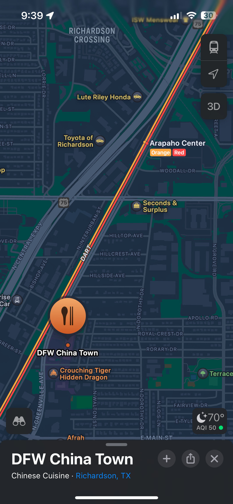
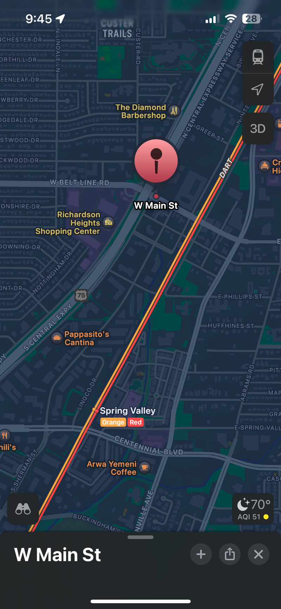

🚆 Is DART's New Transit Line Enough to Save It? (Part 1: Context)
Two trains pulling into the Silver Line station at UTD
Dallas Area Rapid Transit serves over 50 million people a year. And in five months, if even one of Dallas' twelve suburbs vote to leave DART, we could lose it for good. At the same time, DART just linked these disgruntled suburbs with its newest rail line. Is the state-of-the-art Silver Line enough to placate Plano and Co. - and thereby save DART as we know it? Join me in this two-part article as I review the Silver Line, and why it’s a critical inflection point for Dallas transit.
The Origins of DART
Today, no one would argue that DART is efficient. But was it always this way? To find out, let’s take a look at the unique problem DART had to solve. By the 90’s, millions and millions of Dallasites were commuting downtown every day. Dallas knew that if growth trends continued, rail transit would be the only long-term solution. But Dallas is really, really spread out. However you sliced it, people were going to be too far from train stations.
DART’s current extent, circa December 2025 (image credit)
To tackle this problem, DART designed their rail lines around an untested but promising “Park-and-Ride” model. The idea was that commuters would drive their own cars to the closest DART station, park there, and take the train downtown. Some Park-and-Rides have seen success in the US, 1 but nothing of this scale had ever been attempted. Undeterred, DART began scooping up abandoned freight rail lines (for pennies on the dollar) and converting them to passenger rail. By 1996, DART unveiled its first passenger rail lines in Dallas.
Really cool animation of DART’s evolution (not including the Silver Line) (image credit)
Dart’s Fatal Flaw
DART was built around two assumptions: that commuters would always need to get downtown, and that increasing freeway traffic would soon make these trips untenable. But even before DART started construction, these assumptions had begun to unravel. Instead of growing, downtowns across the U.S. declined as companies relocated to suburban “corporate campuses”.2 The Internet and COVID only accelerated this trend, and an increasing number of companies today are eschewing office space altogether. As a result, commuter congestion in Dallas never hit the critical mass planners were expecting. Without this anticipated traffic apocalypse, DART park-and-ride wasn’t any faster than driving.
Because of this trendy “transit mall”, DART has to crawl through Downtown. (image credit)
The failure of park-and-ride kneecapped DART’s usefulness in other areas, too. It’s common sense to put stations in high-density, walkable locations. Main Street Richardson and Dallas' historic Chinatown fit this description, and both have the Red Line at their front door. But in both cases, the closest stations are a ~20 minute walk away! 3 This decision made sense at the time. Stations in lower-density areas could fit more commuters into larger parking lots. But today, these useless stations are just baggage from DART’s well-meaning but misguided Park-and-Ride obsession.
|  |  |
|---|---|
| DART to Chinatown - 17 minute walk | DART to Main Street Richardson - 18 minute walk |
The way I see it, 1990’s DART was future-proof up until the future changed. Designed around an obsolete regional migration pattern, DART now has a dilemma. Most existing stations are in low-density locations, no one works downtown, and everyone with a car still drives to work. So how can DART provide effective transit, both for now and the future? Stay tuned for Part 2, where I’ll talk about how the Silver Line addresses these concerns and more!
-
Chicago’s Skokie Swift ↩︎
-
This trend also birthed Irving’s ill-fated APT monorail, which I wrote about here! ↩︎
-
Also bear in mind - Dallas had 116 days over 90 F (32 C) last year. ↩︎